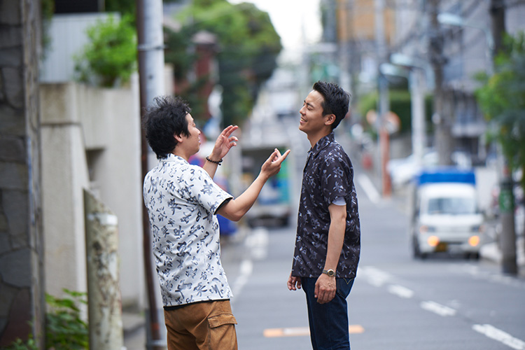
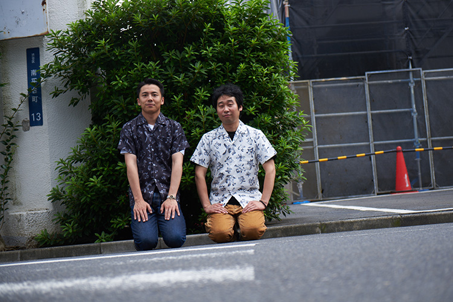

『舟を編む』の脚本でも知られる渡辺謙作監督の８年ぶりの新作『エミアビのはじまりとはじまり』で描かれるのは、一組の漫才コンビ。相方の海野（前野朋哉）を交通事故で失った漫才師の実道（森岡龍）と、海野と共に事故死した雛子（山地まり）の兄であり漫才師の先輩、黒沢（新井浩文）の再生していく姿が、過去と現在を交差させながら、奇想天外な展開も納得させてしまうような絶妙な温度で描かれる。俳優としてで活躍する傍ら、共に映画監督としても評価を得るなど、マルチな才能を発揮するW主演の森岡龍と前野朋哉の２人は、なんと映画を飛び出して、漫才コンビ「エミアビ」として、M-1にも参戦中。その予選１回戦の翌日に、映画撮影後も続く「エミアビ」としての日々について聞いた。
お笑いの世界って、役者と違って勝ち負けがはっきりしてるから、闘争心はありましたね。天下一武道会みたいな空気なんですよ。（森岡）
M-1予選１回戦突破、おめでとうございます。
森岡・前野：
ありがとうございます。
２回戦は映画公開後になるんですよね？
前野：
地方は順次公開になるので、もしかしたら公開前になる地域もあるかもしれないですけど、基本的にはそうですね。
映画公開前にもし落選していたら、縁起が良くなかったので一安心ですね。
森岡：
縁起良くなかったですね。駄目だったら地方予選にも行こうって話していたんですよ。コンビで、１回戦は２回まで受けられるので。
そこまでの覚悟もあったんですね。
前野：
それはもちろんありましたね。
勝ち進めば、決勝本戦までやるわけですよね。
前野：
そうですね。辞退する理由はないです（笑）
森岡：
勝ち進めば、一千万円まで目指します（笑）
しっかり見届けます。ちなみに昨日の予選でのエピソードを聞かせて下さい。
森岡：
お笑いの世界って、役者と違って勝ち負けがはっきりしているから、その分、闘争心はありましたね。会場は、天下一武道会みたいな空気なんですよ（笑） お客さんもほぼ満席だったよね？
前野：
キャパは、ほぼ埋まってました。
ネタは劇中のものとは違うんですか？
森岡：
はい、新ネタですね。
前野：
監督がネタを書いて下さって、それを２人で練習した感じです。
どの段階で実際のM-1に参戦するという話は出たんですか？
前野：
撮影終わってからだったかな？
森岡：
うん。でも、そういう話は早い段階からあった気がします。最初は冗談半分でしたけど。「このままM-1に出よっか」という話にはなってました。
前野：
実は１年前のM-1に出ようって話になったんですけど、撮影直後で映画公開はまだ先だからってことで、満を持して今年出場した感じです。
森岡：
M-1のネタ合わせに関しては、１ヶ月前に３日間やって以降はお互いのスケジュールが合わなくて、次に合わせたのは予選の前々日。実質５日間くらいでした。
撮影が終わってからも役が続いているというのは貴重な経験ですよね。
前野：
そうですね、緊張は続いてますね。ただ、役が続いているという感じではないですね。
あくまで、「森岡龍」と「前野朋哉」で挑んでいるという感じですか。
森岡：
どちらかと言えばそっちですね。撮影してた時と比べると。
前野：
もちろん漫才のネタは映画のキャラクターで書かれているので、役と自分の半々みたいなところはあったかもしれないですね。

海野が死んだことで相方はこういう顔をしてたのかって、海野として観察してるような不思議な体験でした。（前野）
映画本編に話を移しますが、先ほど言われていたように、お笑いの評価ってシビアなので、芸人の役作りも簡単ではなかったと思います。
森岡：
そういう意味では、芸人として映画の中に居て、その映画の中のお客さんを笑わせようとしていることが正しい形だと思うので、映画の観客を笑わせるってことではなく、劇中で目の前にいるお客さんをちゃんと笑わせるために漫才をやれば、一応フィクションとして成立するはずだから、そこは開き直ってたというか、ネタが笑えるかどうかは二の次に考えていたかもしれないです。
前野：
う〜ん、だけど、笑えたら一番いいよね。でも分かんないんですよ（笑） これから観てもらうわけだから。森岡君と一緒にいるシーンはそれほど無かったけど、２人が一緒のシーンはコンビとして居たので、会っている時は安心しましたね。クランクイン前の練習でずっと一緒で、芝居をしに行くというより、漫才をしに現場に行くような感覚でした。
芸人の物語という企画や台本ありきで出演は決まったんですか？ もしくは、森岡さんと前野さんの主役２人ありきだったんですか？
森岡：
謙作さんが監督でやるよってことで、お笑いの話ってのは聞いていたんですよね。最初は『DEAD OR LAUGH』って仮題で。相方が前野君って聞いたのはいつだったっけ。すいません、ちゃんと憶えてないですね（笑）
これまでの「森岡龍」を壊すというのが監督の中での１つのテーマだったと伺ったんですけど、それは事前に聞いていました？
森岡：
聞いてなかったです。今になって思えば、そりゃそうだよなってくらい壊されてました（笑）
前野：
ははは（笑）
森岡：
「壊すよ〜！」って言いながら壊しにくるんじゃなくて、壊れちゃった後に「壊しにいってたんだよ」って監督に言われました（笑）
完成したものを観た時に、新しい自分は映っていました？
森岡：
そこに関しては、まだ客観的になれなくて。でも周囲の人が「あのシーンのあの顔は、新しい森岡君が映ってたよ」って、言われたりもしたので。
前野：
全然、違う顔してますもん、普段と。
森岡：
ほんと？ じゃあ、やっぱりそうなのかなって思うんだけど、自分では分からなくて。ただ、この映画を経た後の現場に対する態度が自分の中で変わってるから、そういうことだったのかな、とは思うんです。
自らが演じる海野が死んだ後、前野さんには、森岡さん演じる実道はどう映っていました？
前野：
海野が死んだことで相方はこういう顔をしてたのかって、海野として観察してるような不思議な体験でした。実道はすごく苦しそうな顔をして、少し希望が見えた時は本当に良かったと思いましたし。実道が決意を固めて黒沢（新井浩文）に会いに行った時の顔が、最初に映画を観た時に忘れられないくらい色濃く残ってます。だから、海野に感情移入して、実道を観ていた感じです。
森岡：
今の前野君の話を聞いていて、確かに現場でも海野のことを考えていたし、映画を観ていても、死んじゃった海野は何を考えてたんだろうって、前野君よりも海野に対して思いを巡らせる時間が多かった。クランクインする前は、漫才の稽古のために、２人で「エミアビ」というコンビとして一緒にいたんだけど、現場に入ってからは、撮影は別々で引き裂かれちゃったから、「あいつは何をやってるんだろう」とか、現場で思いを馳せる時間が長くなっていましたね。
本当に死に別れたような気持ちだったんですね。映画とシンクロしてますね。
森岡：
そうですね。寂しかった。だから漫才のネタのシーンで一緒になると、「おー、久しぶり」って感じで（笑） 「どう？こっちは大変で」って。
前野：
（笑） もちろん連絡は取り合ってはいたんですけど。でも、漫才のシーン以外で一緒だったのは２シーンだけだったので、現場に入る前はずっと一緒にいたのに、現場では一緒にいないってのは珍しい経験でしたね。
森岡：
その感じは出てるかもね。
前野：
うん、出てると思う。

新井さんからリプライがあると、まず考えますね。面白く返さなきゃいけないし。試されてるというか、鍛えられてる感じ。（前野）
現場ではそれぞれが共演者と絡むシーンがあるわけですが、前野さんと山地まりさんの２人は心温まるシーンが多い中、例の「飛ぶ」シーンは衝撃的でした。非現実的なことに説得力を持たせるための苦労はありました？
前野：
そうですね、普通はありえないですからね。「飛んだ！」ってことですから。なんだろう、必死だったというか（笑） 物理的に飛ぶことに必死だったというか（笑） ワイヤーは使いましたけど。すいません、飛ぶ事に関しては、ワイヤーで飛べるかをずっと考えてました！（笑）
技術的なことだけを（笑）
前野：
そうですね（笑） あと、それによってちゃんと場の空気を緩和できるかなということを考えていました。男達に雛子（山地まり）が連れ去られそうな不穏な空気の中で、ガラッと空気を変えないといけなかったので。だから、スクリーンの向こうのことまではあんまり考えてなかったです（笑）
森岡：
僕の場合、ああいったフィクションのシーンは実道には無かったから、そんなことありえねえよって映画の中で思っているような感覚も持ちつつ、海野だったら飛ぶかもなっていう心も持ってないといけなかったんです。楽しみではあったんですけど、絵的にどうなるのかは全く分からなかったし。
前野：
あ、そうだよね。現場では絵はまだ無かったからね。
非現実的だけど、突き放されそうで、突き放されない。不思議ですよね。新井（浩文）さんにもシュールなシーンがありましたけど。
前野：
そうなんです。それで引いちゃうとかじゃなく、起こっている状況は起こっている状況として受け入れられるんですよね。全編通して、それがこの映画ならではのエッセンスではありますよね。
そういえば、撮影後もTwitter上での新井さんとの２人のやり取りが、そのまま劇中の師弟関係みたいですよね。
前野：
僕は常に顔色窺ってますね（笑）
森岡：
ははは（笑）
前野：
新井さんからリプライがあると、まず考えますよね。面白く返さなきゃいけないし。試されているというか、鍛えられている感じです。キター！みたいなね（笑）
面白い宣伝活動もしていますよね。２人で色んな媒体を回ったりされているんですよね。
前野：
この間、色んな会社を回ったりしたのは面白かったですね。皆さん、働いてるわけじゃないですか。その中でチラシを配っている状況に、最初は申し訳ない気持ちがあったんですよ。
森岡：
突撃訪問だからね。でも意外とウェルカムな感じだったね。
前野：
そう。宣伝に協力して下さって、有り難かったですね。
森岡：
あとやっぱり、M-1への参加が宣伝の一環としては一番大きいことですね。主役として僕らが自発的に宣伝していかなければいけない規模の映画だと思うし、引っ張っていこうとは思っているんです。あとは新井さんをどう巻き込んでいけるかは大事ですね。今はTwitterで様子を窺っている感じですけど、チラ見しつつ、最終的にこっちに引っ張って、「黒沢さん！」ってやるのが課題。新井さん、黒木さん、山地さんを宣伝に巻き込む。
俳優モードに切り替えるというよりも、俳優にならざるを得ない状況でしたし、この作品を経て、俳優にさせられた気がしていて。（森岡）
森岡さんも前野さんも役者であり映画監督でもあるわけですけど、1人の監督として観た時、この映画はどう映りますか？
前野：
僕は絶対に自分では撮れない作品です。謙作さんの経験というか、人間の深い部分が描かれているような気がして。
良い意味で、わざとそれを馬鹿馬鹿しく描いているようなところもあります。
前野：
そうですね。
森岡：
でも、馬鹿馬鹿しい方向に振り切り過ぎないし、安易に感傷的にもなり過ぎない、そういうバランス感覚がある。あとベテランのスタッフが揃っていて、落ち着いているというか、腰を据えて撮っているところが大人だなと感じますね。
自身の現場と比べて、違いますか？
前野：
全然違います。ワチャワチャしない（笑） 今、何をすべきか分かってない人が存在しない。
森岡：
それでいて過激で自由なんですよね。
前野：
そう、それでいて挑戦的なんですよ。いや、だから挑戦的なことが出来るのかもね。
森岡：
だからこそ挑戦的なことが出来るんですよね。同じこと言っちゃった（笑） でも、そうなんです。ドシッとしてるから懐が深いんですよね。
お２人共に監督作品が映画祭で評価を受けたりもしていますが、監督としての現場の居方に明確な違いは感じるわけですね。
前野：
違いますね。謙作さんの旗の元に集まっている感覚がすごくあって、監督としてみんなを１つの方向に導いている感じがします。僕はそうじゃないので。
森岡：
周囲のみんなに何とかしてあげなきゃって感じさせるタイプ？（笑）
前野：
そう、そう（笑）
それは敢えてですか？
前野：
敢えてじゃないです（笑）
森岡：
（笑） 謙作さんは頼もしい人なんで、謙作さんに付いて行けば間違いないって感じでした。俳優モードに切り替えるというよりも、俳優にならざるを得ない状況でしたし、この作品を経て、俳優にさせられた気がしていて。僕にとっては俳優にちゃんとさせてくれた映画ですね。
では、最後に一言ずつ。
森岡：
変わった映画と言えば変わった映画だけど、ちゃんと面白い映画で、その面白さっていうのは、前野君と僕だけじゃなく、新井さんも黒木さんも山地さんも演技というものを超えた芸を披露していると思うんです。俳優だけど、芸を持ち寄って披露するみたいな魅力が詰まった映画ではあると思うので、そういうところを楽しんでもらえれば嬉しいですね。あと、M-1に関しては何とか２回戦突破したいな、と。
２回戦に向けての反省点は？
森岡：
まず僕は途中でネタが飛んじゃったので。時間にして１秒くらいだったから、すぐに前野君が察して突っ込んでくれて、事なきを得たんですけど。
ちなみにどんなボケだったんですか？
前野：
僕が「おとり捜査じゃねーか！」って言った後に…
森岡：
「そんな文句言うんだったら、お前が痴漢と女の子の二役やれよ」って台詞が出てこなくて…。
前野：
そこで僕が「飛んでんじゃねーよ」って言ったんです（笑）
笑い増しじゃないですか。
森岡：
変な話、一番ウケたのはそこでした（笑）
前野：
お客さんの顔までは見られないし、記憶も霞んでるんですよね。
森岡：
分かる。霞んでるね。あと、周りの漫才師の人達のネタが物凄くウケているように感じる。爆笑じゃん、って。舞台袖で待っている時の笑い声とかヤバかったよね。
前野：
笑いの音量が違うように感じたね。
ネタは２回戦も同じものなんですか？
森岡：
いや、新しいネタです。
前野：
今日、監督から新ネタが上がってくる予定です。
楽しみは続いてるわけですね。本来、撮影を終えたら、基本的にはお客さんに届けるだけであるはずなのに楽しいですね。
前野：
そうですね、まだ本番が続いている感じです。
少し脱線してしまったので、前野さん、まとめの一言をお願いします。
前野：
え〜、難しいな。どんな状況であっても観に来て下さい。えっ、このインタビューを読んだ人は観に来て下さい、損はさせません。あれ、歯切れ悪かったかな（笑）
森岡：
どうも、ありがとうございました〜！（漫才師調で）